Perceptually Uniform Colormaps from MatPlotLib
The MatPlotLib Perceptually Uniform Colormaps submission includes the default colormap family and default line colororder family from MatPlotLib 2 and 3. This document shows examples of their usage.
Contents
Overview
matplotlib_plot()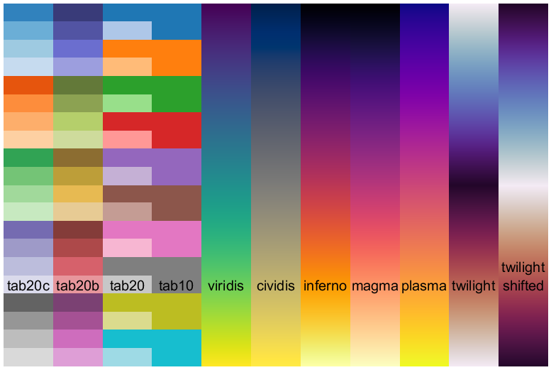
VIRIDIS
- Sequential
- Perceptually uniform
- Default colormap for MatPlotLib 2 and 3
close()
load spine
image(X)
colormap(viridis)
colorbar()
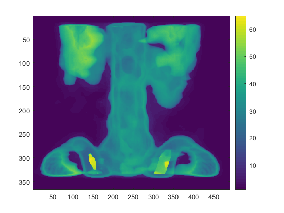 CIVIDIS
- Sequential
- Perceptually uniform
- Optimized for color-vision deficiency
colormap(cividis)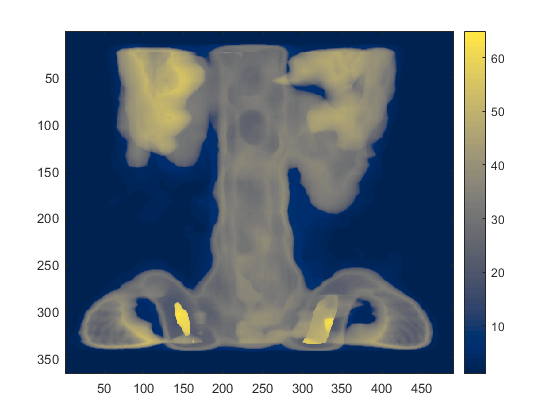
INFERNO
- Sequential
- Perceptually uniform
colormap(inferno)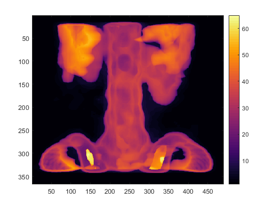
MAGMA
- Sequential
- Perceptually uniform
colormap(magma)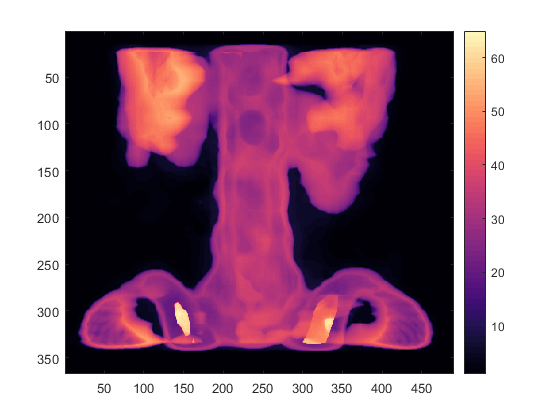
PLASMA
- Sequential
- Perceptually uniform
colormap(plasma)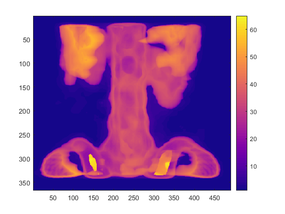
TWILIGHT
- Cyclical
- Perceptually uniform
colormap(twilight)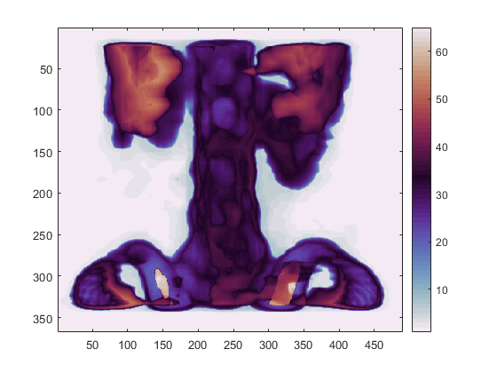
TWILIGHT_SHIFTED
- Cyclical
- Perceptually uniform
colormap(twilight_shifted)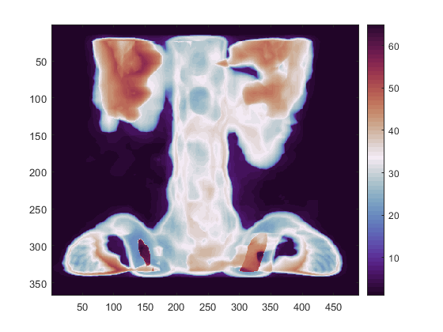
TAB10
- Qualitative
- Default line ColorOrder for MatPlotLib 2 and 3
- Named VEGA10 in MatPlotLib 2
N = 10; X = linspace(0,pi*3,1000); Y = bsxfun(@(x,n)n*sin(x+2*n*pi/N), X(:), 1:N); clf() axes('ColorOrder',tab10(N),'NextPlot','replacechildren') plot(X,Y, 'linewidth',4) legend('location','eastoutside')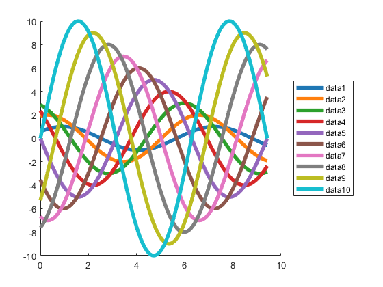
TAB20
- Qualitative
- Named VEGA20 in MatPlotLib 2
N = 20; Y = bsxfun(@(x,n)n*sin(x+2*n*pi/N), X(:), 1:N); clf() axes('ColorOrder',tab20(N),'NextPlot','replacechildren') plot(X,Y, 'linewidth',4) legend('location','eastoutside')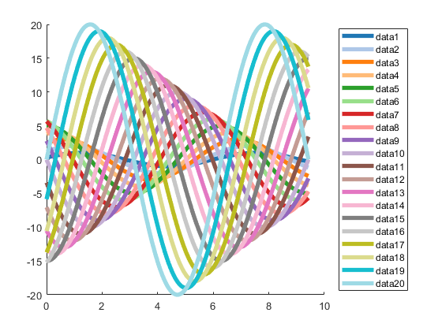
TAB20B
- Qualitative
- Named VEGA20B in MatPlotLib 2
clf() axes('ColorOrder',tab20b(N),'NextPlot','replacechildren') plot(X,Y, 'linewidth',4) legend('location','eastoutside')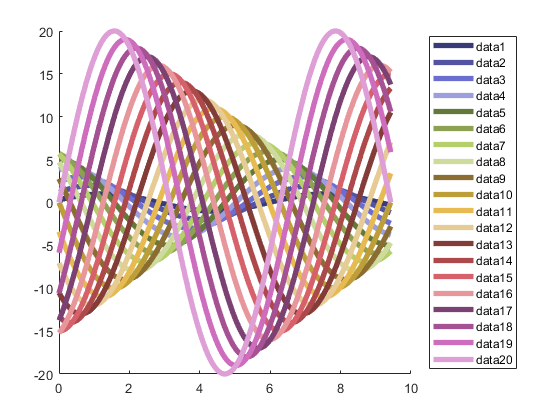
TAB20C
- Qualitative
- Named VEGA20C in MatPlotLib 2
clf() axes('ColorOrder',tab20c(N),'NextPlot','replacechildren') plot(X,Y, 'linewidth',4) legend('location','eastoutside')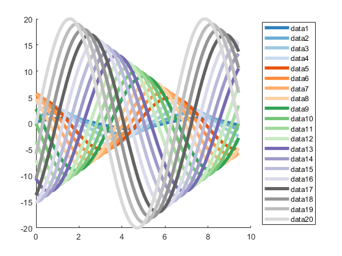